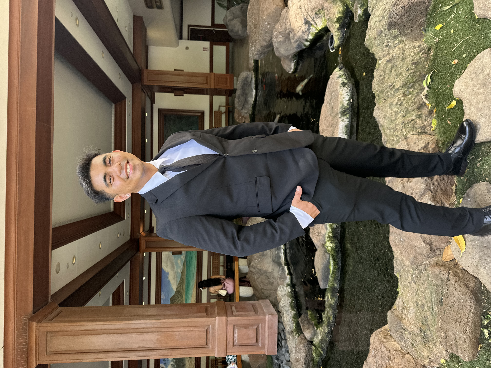
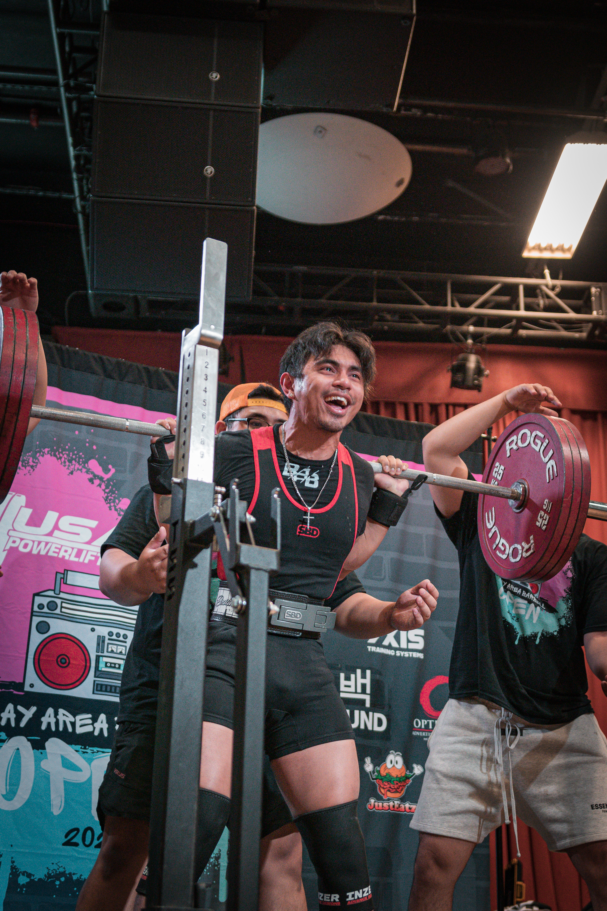

Hello, I'm
Francis "Butch" Isip 👋
Software Engineer | Full-Stack Developer
Bay Area native transitioning 4+ years of hands-on diagnostic experience into building clean, reliable, full-stack software applications.

About Me

From Physical Systems to Software Engineering
Born and raised in San Bruno, CA, right in the heart of the Bay Area, I spent over four years working in my family’s plumbing business. Diagnosing and fixing complex physical systems under pressure taught me how to break down hard problems step-by-step. Driven by a desire to build scalable digital solutions, I made the transition into Software Engineering and fell in love with coding.
Outside of tech, I'm a competitive powerlifter. Pushing my limits on the Squat, Bench, and Deadlift has built a mindset rooted in discipline, continuous improvement, and resilience—values I bring directly into software development, personal growth, and professional relationships.
Good, Better, Best. Never let it rest 'til your good is better and your better is best.
— From a big brother figure
Technical Skills
Technical Stack
- Languages: Python, SQL (MySQL, MariaDB), HTML5, CSS3
- Frameworks: Django
- Developer Tools: Git, GitHub, MySQL Workbench
Transferable Strengths
- Diagnostic Troubleshooting: 4+ years isolating root causes in complex physical systems under strict time constraints.
- Discipline & Goal Execution: Powerlifting background focused on iterative progress, technical execution, and long-term targets.
- Direct Communication: Clear client-facing interaction, explaining technical assessments, and working in small team environments.
Featured Projects
Task Manager Application
A Python command-line application for registering users, adding and managing tasks, and generating completion reports. Uses text files to store user and task data.
Shelf Tracker Database
A Python command-line book inventory application backed by SQLite. Supports adding, updating, deleting, and searching books using SQL queries.
News Application
A Django news application with role-based access for readers, journalists, and editors. Includes article creation and approval workflows, newsletters, and subscriptions.
Community & Leadership
Spotter / Loader Volunteer
Peninsula Barbell & Bay Area Barbell Competitions
Dec 2023 – July 2026Managed platform safety, athlete support, and high-weight loading logistics for regional powerlifting meets.
Youth Coach Volunteer
Mega Sports Camp (Pinnacle Village)
July 2017Coached youth groups on athletic fundamentals, exercise routines, and active sportsmanship.
Get In Touch
Whether you want to discuss software engineering, talk powerlifting, or collaborate on a project—my inbox is always open!